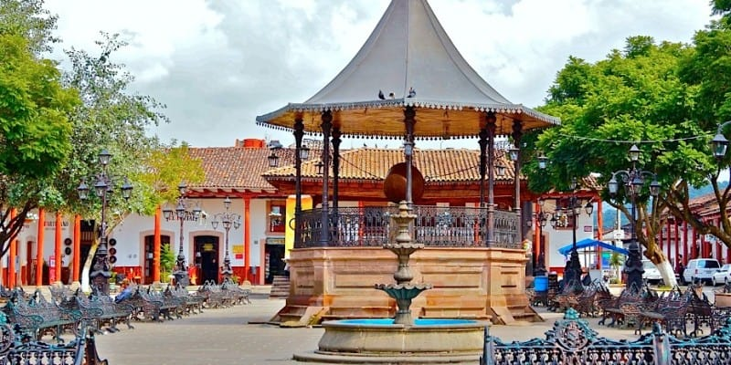

Museo Nacional del Cobre |
En el museo se presentan las primeras manifestaciones purépechas y obras de arte popular mexicano. Cuenta con talleres artísticos en los que se ha trabajado el martillado; por otro lado, este lugar ha fungido como sede de concursos artesanales, además de albergar el Premio Nacional de Ciencias en Artes y Tradiciones Populares. | |
Quiosco de la Plaza Principal |
 | La plaza tiene un hermoso kiosko que lo engalana una olla hecha a base de cobre. La arquitectura que la distingue es colonial,actualmente esta bella plaza está rodeada de tiendas donde se encontrarán productos elaborados en tan famoso metal. |
Talleres artesanales |
Originalmente Santa Clara era habitada por el pueblo Purépecha, quienes descubrieron el cobre de la región y desarrollaron técnicas para trabajarlo, tanto en este poblado como en sus alrededores, los antiguos indígenas de la región martillaban el cobre para crear artículos utilitarios, adornos como cascabeles zoomorfos, bezotes, aretes y otros instrumentos como hachas y cuchillos. Hoy sobre la calle de José María Morelos y Pino Suárez podrás encontrar los talleres de mayor tradición en el arte del martillado y admirar la destreza de los maestros artesanos, además de adquirir alguna de sus obras de arte. | |
Lago de Zirahuén |
A tan sólo 14 kilómetros del pueblo de Santa Clara del Cobre, encontrarás entre un bosque de pinos y encinos, un lago tan hermoso, que incluso los dioses lo usan como espejo o al menos eso es lo que significa en español su nombre: Zirahuén. Pero el misticismo de este lugar no termina ahí, ya que se dice que el lago está encantando. Este cuerpo de agua de tonos verdes mezclados con azules turquesa, encierra una misteriosa leyenda protagonizada por la preciosa princesa Eréndira, hija del rey purépecha Tangaxoán, de quien quedó perdidamente enamorado un conquistador español y en su obsesión, decidió raptarla escondiéndola en medio de un bosque. |
|
Feria Nacional del Cobre |
Santa Clara de Asís |
Señora del Sagrario |